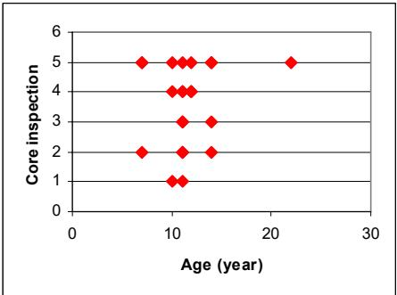
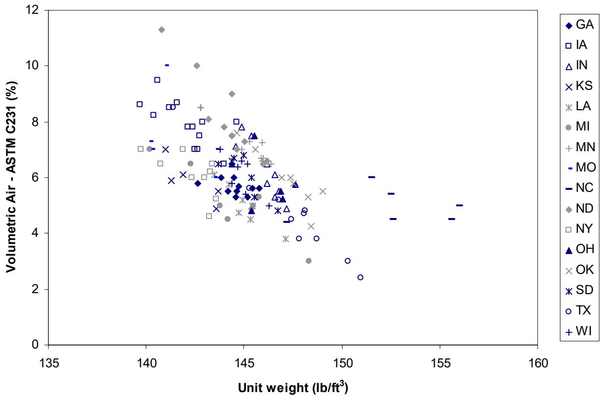
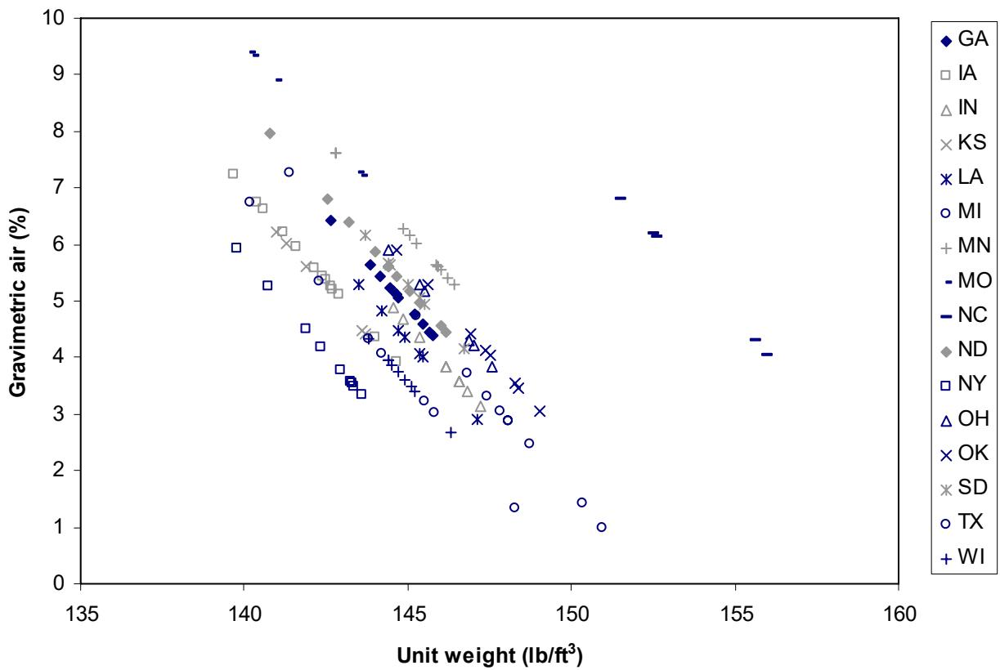
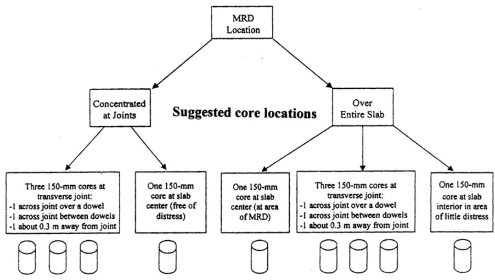
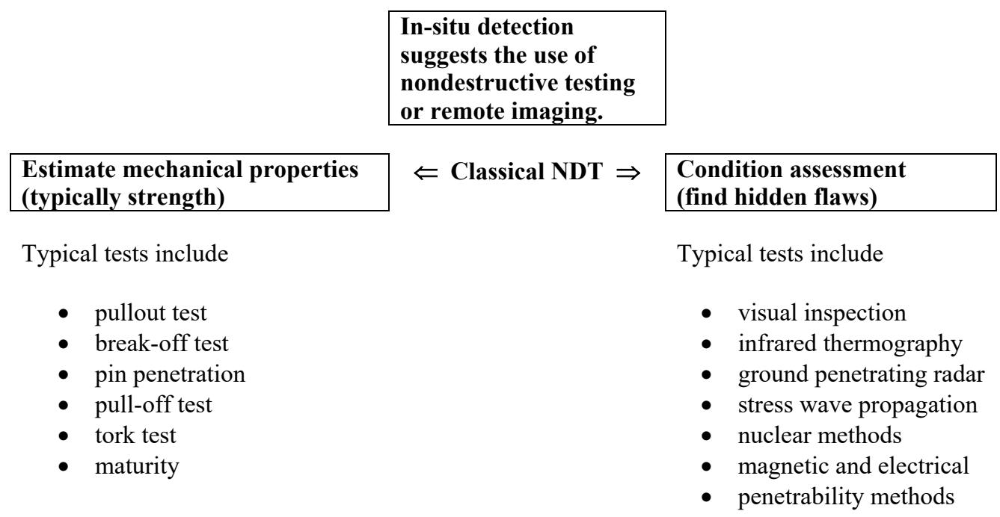
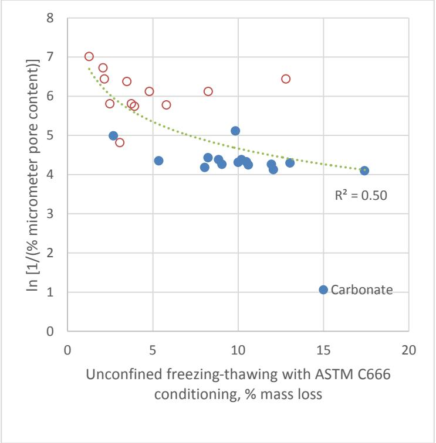

Materials-Related Distress (MRD)
Materials-related distress in concrete pavements refers to failures that are a direct result of the properties of the materials and their interaction with the environment, distinguishing these issues from those caused by inadequate design for traffic loads or improper construction practices. This category of distress is fundamentally a durability issue rather than a strength problem, often manifesting as internal deterioration such as cracking or scaling that may not be immediately evident on the pavement surface [1]. These failures typically arise from a combination of chemical reactions and physical deterioration mechanisms, which are frequently exacerbated by construction issues such as inadequate air-void systems, high water-cement ratios, and improper aggregate handling that compromise the material’s long-term durability [2]. Because these distresses often manifest as subsurface cracking or deterioration that may not be immediately visible on the pavement surface, effective diagnosis typically requires nondestructive testing methods to locate and quantify hidden damage before definitive analysis can be made [1] [3].
CP Tech Center reports covering “Materials-Related Distress (MRD)” also include the following subtopics: Alkali-Silica Reaction, D-Cracking, Ettringite Fill, Premature Joint Deterioration, and Sulfate Attack.
Materials-Related Distress (MRD) unifies pavement failures that originate from internal material vulnerabilities rather than external traffic loads. Alkali-Silica Reaction manifests as a durability failure driven by internal chemical expansion of reactive aggregates within the cement paste, directly linking pavement distress to inherent material composition rather than external loading conditions. D-Cracking manifests as a durability failure driven by internal freeze-thaw stresses that compromise the concrete’s air void system and aggregate integrity rather than external traffic loads. Ettringite Fill manifests as a durability failure driven by internal chemical expansion from sulfate-induced crystal precipitation within the concrete’s air-void system rather than external traffic loading. Premature Joint Deterioration manifests as a durability failure driven by inherent material vulnerabilities to chemical attacks and freeze-thaw cycles rather than structural overload. Sulfate Attack manifests as Materials-Related Distress by driving internal chemical expansion through the reaction of external sulfate ions with cementitious aluminate phases, thereby compromising durability rather than structural capacity.
Sources (13)
Sub-concepts (5)
Key findings
- Materials-related distress is fundamentally characterized by subsurface origins that produce subtle signals in nondestructive testing methods, making visual inspection insufficient and detection highly sensitive to environmental conditions such as moisture content [1] [3].
- Nondestructive testing technologies currently lack the diagnostic capability to definitively determine the specific cause of deterioration, necessitating reliance on coring and petrographic examination for actual diagnosis [1] [3].
- Concrete durability is often compromised by a convergence of materials and construction issues rather than a single initiating mechanism, with expansive reactions interacting critically with inadequate or unevenly distributed air-void systems [2] [4].
- Materials-related distress mechanisms such as alkali-silica reaction, D-cracking, sulfate attack, and ettringite formation often coexist or interact within the pavement structure, resulting in premature deterioration even in properly constructed pavements [5] [4].
- Aggregate pore structure characteristics differ significantly between carbonate and non-carbonate fractions, with current specification limits for carbonate aggregates potentially rejecting durable materials because simple metrics do not adequately capture the pore structure responsible for freeze-thaw durability [6] [7].
- The field has shifted toward performance-engineered specifications that move beyond traditional prescriptive limits to directly measure critical durability properties such as transport resistance and air-void system quality [8] [9].
- The field faces a growing prevalence of premature distress driven by complex interactions between Portland cement and supplementary cementitious materials that lack robust process control and standardized acceptance criteria [8].
- Calorimetry testing serves as a critical diagnostic tool for identifying material incompatibility and flagging changes in cementitious properties before they manifest as field distress by monitoring heat evolution [10].
Chemical Reaction Mechanisms and Synergies
Evidence: 8 reports (6 primary)
Materials-related distress in concrete pavements stems from the interaction between material properties and environmental conditions, distinguishing these durability failures from those caused by structural overload or construction errors [1]. These degradation processes often involve complex synergies where chemical reactions, such as expansive crystalline formation, interact with physical mechanisms like freeze-thaw cycling and moisture saturation to accelerate internal deterioration [11] [2]. The resulting damage frequently manifests as subsurface defects that compromise the protective air-void system and aggregate stability, requiring specialized detection methods to identify hidden delaminations before they become visible on the surface [1] [3].
The following figure illustrates how concrete pavement condition deteriorates over time, as evidenced by core analysis data.

(b). Age vs. concrete pavement condition as determined by core analysis [2]The figure plots discrete data points representing the age of concrete pavements against their condition scores derived from core inspections. No clear relationship could be determined between concrete pavement condition and the deterioration mechanisms reported, despite best efforts to assemble the relevant materials and construction information.
Research problem — The industry lacks a comprehensive understanding of how complex chemical interactions between diverse constituents and environmental factors drive synergistic deterioration, rendering isolated mitigation strategies insufficient for preventing premature distress [2] [8]. Existing testing procedures have remained static despite the increasing complexity of modern mixtures, creating a critical gap in the ability to predict and control durability factors such as secondary crystalline precipitation and chemical expansion [5]. Traditional quality control methods relying on strength and basic physical properties fail to capture critical transport resistance and microstructural stability, necessitating a shift toward performance-based design that accounts for cross-cutting material compatibilities [5] [9].
State of the art — The field has shifted from prescriptive specifications toward Performance-Engineered Mixtures that utilize rapid, standardized test methods to directly measure critical durability properties such as fluid transport and air-void system characteristics [9]. Current best practices emphasize a holistic approach to mitigating synergistic distress mechanisms by combining supplementary cementitious materials with rigorous construction quality control, including real-time monitoring of the fresh concrete air-void system [2] [5]. Industry consensus recognizes that premature deterioration is rarely caused by a single mechanism but results from interacting factors, necessitating dynamic process control and statistical monitoring to manage material incompatibilities before they manifest as distress [11] [5].
The following figure illustrates the relationship between air content and unit weight in fresh concrete, which are key parameters monitored to ensure proper material performance.

Air Content (Pressure Method) vs. Unit Weight of Fresh Concrete [5]The figure plots volumetric air content against unit weight for fresh concrete samples from various states, showing a general inverse relationship where higher air content corresponds to lower density. The results show that as the air content is increased, the unit weight of the concrete decreases because a larger volume of the fresh concrete is air voids.
Findings from the reports
- Materials-related distress typically resulted from a convergence of marginal factors rather than a single initiating mechanism, with interactions between chemical reactivity, inadequate air-void systems, and construction practices driving premature deterioration [11] [2] [5].
- Secondary ettringite deposition frequently filled small air voids within the hardened concrete, which compromised the effectiveness of the air-void system and exacerbated internal cracking even when original mix parameters appeared adequate [11] [2].
- The industry transitioned toward performance-based mix design systems that utilized accelerated testing for compatibility and long-term strength prediction instead of relying on prescriptive volumetric ratios [8] [9].
- Supplementary cementitious materials such as fly ash or ground granulated blast furnace slag improved pavement resistance against deterioration by reducing total alkali loading and mitigating expansive reactions [2] [5].
- Conventional quality control measures that evaluated only total air content often failed to ensure freeze-thaw durability because they missed deficiencies in the critical air-void spacing factor [5].
- Deicer saturation triggered secondary ettringite formation within the air-void system, which pushed spacing factors beyond acceptable limits and rendered near-surface paste non-durable during cyclic freezing and thawing [11].
- Real-time Air Void Analyzer testing enabled immediate mix adjustments during construction to correct void structures before hardening, resulting in significant cost savings compared to post-construction distress remediation [5].
- Poor local drainage conditions saturated joints and caused erosion of underlying support, which exacerbated material-related distresses such as joint deterioration and aggregate durability issues [12].
Novelty & rigor — Research novelty lies in shifting from isolated material specifications to integrated, performance-based mix design systems that correlate ingredient chemistry with long-term durability predictions using advanced modeling and standardized electronic communication protocols [8]. Distinct methodological contributions include the application of real-time optimization tools and statistical process control to monitor critical durability properties, enabling the detection of synergistic distress mechanisms such as secondary ettringite precipitation within air voids before they manifest as structural failures [5]. Reproducibility is achieved through cooperative governance structures and standardized databases that mandate consensus target values, common laboratory procedures, and the use of accelerated durability tests correlated with mechanistic models to validate performance under varying climatic conditions [8].
The following figure illustrates the relationship between gravimetric air content and unit weight in fresh concrete, which are critical parameters for validating these performance-based mix designs.

Gravimetric Air Content vs. Unit Weight of Fresh Concrete [5]The figure plots gravimetric air content against unit weight for fresh concrete samples from various regions, revealing a general inverse relationship where higher densities correspond to lower entrained air percentages.
Reported values
| Parameter | Value | Context | Source |
|---|---|---|---|
| air content | below 5% | locally saturated concrete | [11] |
| air void content | 11.0% | concrete sample consistent with current technology for freeze-thaw resistance | [11] |
| spacing factor | 0.004 inches | air void system of concrete sample consistent with current technology for freeze-thaw resistance | [11] |
| water-to-cement ratio (w/cm) | above 0.4 | marginal factors for distress | [11] |
| air system adequacy failure rate | 39% | cores evaluated in Southeast Michigan study | [2] |
| air-void system adequacy failure rate | 39% | cores in Southeast Michigan concrete | [2] |
Across the reviewed reports, materials-related distress is collectively established as a multifaceted phenomenon driven by the synergistic interaction of multiple deterioration mechanisms rather than isolated chemical or physical failures. A critical convergence in these findings identifies secondary ettringite formation as a pervasive exacerbating factor that precipitates within the air-void system during saturation events, thereby compromising freeze-thaw resistance even when initial mix parameters appear adequate. The reports further contrast traditional prescriptive quality control with performance-based assessments, highlighting that conventional measurements of total air content often fail to capture the critical spacing factor deficiencies that allow these chemical and physical synergies to initiate premature distress. [11] [2] [5] [9]
The following figure illustrates how these synergistic mechanisms manifest microstructurally by showing secondary ettringite filling entrained air voids adjacent to a distressed joint.
 Micrograph of concrete core showing secondary ettringite filling air voids and microcracking near a distressed joint. [11]
Micrograph of concrete core showing secondary ettringite filling air voids and microcracking near a distressed joint. [11]
The image displays a cross-section of concrete containing coarse aggregate particles embedded in a cementitious matrix with numerous small, spherical pores. Red dashed lines trace microcracks oriented sub-parallel to the distressed joint plane within the material structure.
Implications — Practitioners must transition from prescriptive, experience-based mix designs to performance-engineered systems that optimize for durability and compatibility rather than relying on single pass/fail limits [8] [9]. Mitigation strategies must account for the synergistic interactions between multiple deterioration processes and material constituents, recognizing that addressing one mechanism may exacerbate another if not carefully balanced [2] [5]. Effective management of chemical reaction mechanisms requires holistic forensic evaluation and real-time monitoring of the air void system to detect internal degradation that visual inspections often miss [2] [5].
Limitations — Current testing methods often fail to capture critical microstructural parameters, such as void size distribution and spacing factors, leading to unreliable predictions of distress mechanisms like freeze-thaw damage and chemical reactivity [5] [9]. The causal relationship between secondary ettringite precipitation and structural damage remains unresolved, with uncertainty regarding whether these deposits are a primary driver of deterioration or merely a symptom of prior saturation [11]. Existing durability standards frequently overlook the synergistic effects of multiple distress mechanisms and environmental factors, such as deicing salts and moisture retention, which can compromise systems that appear compliant under isolated testing conditions [11] [5].
The figure below illustrates how secondary ettringite and calcite fills fine air void spaces in highly distressed paste adjacent to a joint crack.
 Micrograph of secondary ettringite and calcite fills in air voids within distressed concrete paste. [11]
Micrograph of secondary ettringite and calcite fills in air voids within distressed concrete paste. [11]
The image displays a thin section of altered concrete paste containing numerous circular features outlined in red, which are identified as fine air void spaces filled with secondary ettringite and calcite.
Detection, Diagnosis, and Testing Methodologies
Evidence: 3 reports (3 primary)
Detection and diagnosis of materials-related distress rely on understanding the underlying chemical and physical mechanisms that drive degradation, such as expansive reactions or thermal effects. Testing methodologies often involve monitoring heat evolution during cement hydration to characterize material compatibility and predict hardening behavior, which helps assess durability risks associated with temperature gradients [10].
The following figure illustrates how curing temperature influences the heat of hydration for Type I cement.
 Effect of curing temperature on heat of hydration (Type I cement) [10]
Effect of curing temperature on heat of hydration (Type I cement) [10]
The figure plots the rate of heat generation against time for Type I cement cured at four different constant temperatures. Cement hydration is accelerated at early ages under high environmental temperatures but is decelerated later on, as evidenced by the main peak shifting to an earlier time and increasing in value as temperature rises.
Research problem — Current diagnostic protocols for materials-related distress rely heavily on destructive coring and subjective petrographic analysis, which are labor-intensive and insufficiently quantitative for assessing subsurface deterioration across large pavement networks [1] [3]. While nondestructive testing techniques offer potential for faster in-situ detection of internal flaws, their effectiveness is limited by environmental variables such as moisture content, and they currently lack the capability to definitively diagnose specific material causes without corroborating petrographic evidence [1] [3]. There is a critical absence of standardized field test methods for identifying material incompatibility issues that lead to erratic hydration and early-age cracking under varying construction and environmental conditions [10].
The following figure illustrates the specific coring requirements necessary to address these diagnostic challenges in pavements suspected of MRD.

Flowchart of suggested core locations for diagnosing Materials-Related Distress (MRD) in concrete pavements. [1]The figure presents a decision tree that outlines specific coring protocols based on the location and nature of suspected distress, distinguishing between areas where damage is concentrated at joints versus those over the entire slab. It details sampling strategies for transverse joints (including locations across dowels or between them) and interior slab sections to facilitate petrographic analysis of internal deterioration mechanisms such as freeze-thaw failure.
State of the art — The current state of the art for detecting Materials-Related Distress relies on a combination of visual inspection and nondestructive testing methods, with petrographic examination via ASTM C 856 serving as the established standard for confirmation [1]. While nondestructive techniques such as ground penetrating radar and laser-based profile scanners can identify surface symptoms and subsurface moisture gradients at highway speeds, they cannot independently diagnose underlying distress mechanisms without coring and petrographic analysis [1] [3]. Calorimetry tests are utilized to monitor heat evolution as an indicator of early-age properties and material incompatibility, although the lack of a specific standard test method for concrete challenges the standardization of interpretation and correlation with field performance [10].
Findings from the reports
- Evaluated Ground Penetrating Radar (GPR) as an in-situ detection method for Materials-Related Distress, finding it capable of identifying subsurface aggregate-related failures but unable to detect extensive map cracking caused by paste-related distress at specific sites [1] [3].
- Demonstrated that GPR signal interpretation is highly sensitive to environmental variables such as moisture content and subgrade support, which can obscure or mask signals from internal deterioration mechanisms [1] [3].
- Observed that while nondestructive testing methods like GPR and pavement profile scanners effectively locate surface symptoms and subsurface anomalies, they lack the diagnostic capability to definitively determine the specific material cause of deterioration [1] [3].
- Established that actual diagnosis of Materials-Related Distress continues to rely on coring and petrographic examination because visual inspection is subjective and nondestructive methods cannot independently confirm the root cause [1] [3].
- Identified calorimetry as a critical diagnostic tool for detecting concrete incompatibility by monitoring heat evolution of hydration reactions to flag cementitious changes before they manifest as field distress [10].
- Showed that semi-adiabatic calorimetry provides reliable predictions of field concrete set times and helps assess the risk of thermal cracking when integrated with performance models, addressing gaps in standard testing sensitivity [10].
- Revealed that Materials-Related Distress is fundamentally characterized by subsurface moisture gradients producing subtle signals, creating a trade-off between survey efficiency (vehicle speed) and detection sensitivity in nondestructive testing [3].
Novelty & rigor — The integration of ground-penetrating radar with pavement profile scanners enables the rapid, nondestructive detection of subsurface distress features such as moisture gradients and internal cracking at highway speeds, distinguishing physical symptoms from surface-level observations [1] [3]. A significant methodological limitation is that these nondestructive techniques identify the presence of distress but cannot diagnose its chemical origin, necessitating coring and petrographic examination for definitive cause determination [3]. Novel calorimetry procedures using affordable isothermal or semi-adiabatic devices allow for the rapid monitoring of heat evolution to detect cementitious material incompatibilities and predict early-age thermal cracking risks before construction [10].
Across the reviewed reports, nondestructive testing methods like Ground Penetrating Radar (GPR) and visual inspection systems are effective for detecting surface symptoms and subsurface anomalies but lack the diagnostic capability to definitively determine specific material causes. The reliability of these detection methods is significantly constrained by environmental variables such as moisture content, which can obscure distress signatures or complicate signal interpretation. While nondestructive techniques identify physical symptoms, actual diagnosis still relies on coring and petrographic examination to confirm the specific deterioration mechanism. In contrast to field detection methods, calorimetry serves as a critical diagnostic tool for identifying material incompatibility and hydration anomalies before they manifest as physical distress in the field. [1] [3] [10]
Implications — Practice must transition from relying on subjective visual inspections and destructive coring toward adopting nondestructive testing methods, such as ground penetrating radar, to identify subsurface issues before they become visible [1]. Because current nondestructive tools lack the diagnostic capability to pinpoint specific underlying causes without physical sampling, practitioners must accept a trade-off between survey speed and resolution while managing signal interference from moisture gradients [1] [3]. The industry should shift from reactive troubleshooting to proactive verification by integrating simple calorimetry tests into mix design prescreening to detect chemical incompatibilities and thermal cracking risks prior to field placement [10].
The following figure illustrates the common methods available for nondestructive testing.

Classification of nondestructive testing methods for in-situ detection. [1]The figure presents a classification scheme that divides nondestructive testing into two categories: estimating mechanical properties and condition assessment to find hidden flaws.
Limitations — Reliance on expert interpretation of nondestructive test data creates a significant barrier to diagnostic reliability, as current software tools for data visualization and fusion remain underdeveloped [1]. Nondestructive methods such as ground penetrating radar are limited by their inability to diagnose underlying causes and their high sensitivity to environmental variables like moisture, which can obscure signals or create artifacts [1] [3]. Calorimetric techniques for detecting material incompatibility are constrained by difficulties in interpreting heat evolution data and susceptibility to sampling errors, necessitating complementary methods for accurate performance prediction [10].
Air-Void System Design and Aggregate Pore Structure
Evidence: 3 reports (2 primary)
The air-void system in concrete serves as a critical durability feature by providing empty spaces that accommodate the volumetric expansion of water during freezing, thereby preventing destructive internal pressures within the cement paste [5]. Aggregate pore structure fundamentally dictates freeze-thaw susceptibility because fine pores trap water and generate high hydraulic pressure upon freezing, whereas larger or more permeable pores allow water to move freely without stress buildup [6] [7]. Effective durability requires a synergistic design where the concrete’s entrained air voids are closely spaced and appropriately sized to relieve pressure from the aggregate particles themselves, which vary in their water retention capabilities based on mineralogy and pore distribution [6] [5] [7].
Research problem — Current rigid specification limits for carbonate content and absorption often unnecessarily reject aggregates with acceptable freeze-thaw durability, creating a critical barrier as high-quality aggregate resources deplete [6]. Existing criteria fail to capture the nuanced relationship between pore structure, specifically fine pore volume, and actual field performance, leading to overly conservative material selection that does not reflect true durability potential [6].
State of the art — Current practice relies on composite evaluation frameworks that integrate pore structure analysis with mineralogical and chemical assessments to predict field performance, rather than depending on single laboratory tests [6]. While standard soundness tests provide established metrics, the Iowa Pore Index remains a widely used supplemental tool that effectively distinguishes between durable and susceptible aggregate sources by measuring water uptake under pressure [7]. Research consensus indicates that critical pore size ranges are more definitive predictors of freeze-thaw durability than static saturation limits, with aggregates containing significant volumes of pores in the 0.1–1 µm range being particularly susceptible to damage due to their inability to release trapped water [6].
The following figure illustrates how the results of unconfined freezing-thawing tests correlate with the volume of micropores.

Results of unconfined freezing-thawing test using ASTM C666 conditioning versus the amount of micropores [7]The figure plots a negative correlation between the logarithmic percentage of micrometer pore content and mass loss resulting from unconfined freezing-thawing tests. Data points are categorized by aggregate type, with carbonate aggregates showing significantly higher durability (lower mass loss) compared to non-carbonate aggregates.
Findings from the reports
- Demonstrated that high specific gravity combined with low absorption serves as a reliable indicator of good freeze-thaw performance, whereas low density and high absorption reliably flag elevated Secondary Pore Index values associated with distress susceptibility [6].
- Evaluated that non-carbonate aggregates consistently outperformed carbonate aggregates in freezing-thawing durability tests using CSA A23.2-24A, ASTM C88, and unconfined conditioning per ASTM C666 [7].
- Measured that the Iowa pore index demonstrated a fairly strong correlation with performance in CSA A23.2-24A and ASTM C666-based tests, whereas its correlation with the ASTM C88 test was poor [7].
- Revealed that aggregates exhibiting high volumes of micropores showed significantly poorer freezing-thawing resistance compared to those with low micropore volumes [7].
Novelty & rigor — The research challenges the sufficiency of static mineralogical limits by establishing that freeze-thaw durability is governed more critically by pore structure and specific gravity than by carbonate content alone [6]. A methodological framework correlates Iowa Pore Index parameters with mercury intrusion porosimetry data to characterize aggregate pore structure, revealing that carbonates possess distinctively finer pore structures dominated by volumes in the sub-micron range compared to non-carbonate fractions [6]. This approach validates the Iowa Pore Index as a rapid, reliable predictor of D-cracking susceptibility that effectively identifies susceptible microstructures without requiring complex equipment or lengthy standardized conditioning protocols [7].
The following figure illustrates the relationship between unconfined freezing-thawing tests and the Iowa Pore Index.
 Unconfined freezing-thawing test using ASTM C666 conditioning versus Iowa pore index [7]
Unconfined freezing-thawing test using ASTM C666 conditioning versus Iowa pore index [7]
The figure plots the relationship between the Iowa pore index and mass loss from an unconfined freezing-thawing test, distinguishing between carbonate and non-carbonate aggregates.
Across the reviewed reports, carbonate aggregates consistently exhibit finer pore structures with higher micropore volumes compared to non-carbonate counterparts, leading to significantly reduced freeze-thaw durability. [6] [7]
Implications — Aggregate acceptance criteria should move beyond fixed chemical limits like carbonate content and instead utilize combined physical indicators, such as low absorption and high specific gravity, to better identify materials with favorable pore structures for freeze-thaw durability [6]. Agencies must avoid relying on a single standardized test for all durability assessments because pore structure metrics that predict freeze-thaw resistance do not necessarily reflect salt-induced expansion, requiring the selection of evaluation methods aligned with specific environmental stressors [7].
The following figure illustrates how different aggregates attain varying degrees of saturation under diverse humidity conditions, highlighting the physical characteristics that influence frost resistance.
 Degree of Saturation Attained by Different Aggregates at Various Humidities [6]
Degree of Saturation Attained by Different Aggregates at Various Humidities [6]
The figure plots the degree of saturation against relative humidity for four different aggregate types: Traprock, Granite, Graywacke, and Dolomite. It demonstrates that aggregates with higher absorption values reach critical levels of water saturation at lower relative humidities compared to those with low absorption.
Limitations — Current specification limits for carbonate aggregates may be overly conservative because simple metrics like absorption or specific gravity do not adequately capture the complex pore structures that govern freeze-thaw durability [6]. No single rapid test universally predicts durability across all standardized methods, as correlations between different testing protocols often vary significantly depending on aggregate mineralogy and specific pore characteristics [7]. There is a significant gap in the field regarding the precise critical pore size range required to definitively predict long-term performance, indicating that current laboratory tests do not always correlate reliably with actual field conditions [6].
Construction Practices and Deicer Scaling Impacts
Evidence: 1 report (1 primary)
Deicer scaling is a surface deterioration process in concrete characterized by the loss of mortar and aggregate particles from exposed areas, typically triggered by the combined action of freeze-thaw cycles and deicing chemicals [13]. The underlying mechanism involves the expansion of water within the concrete’s pore structure during freezing, which generates internal pressures that exceed the tensile strength of the near-surface paste, leading to flaking or scaling [13]. The severity of this distress is influenced by factors such as air-void system quality, water-cementitious material ratio, and the specific chemical composition of the cementitious materials used in the mix design [13].
Research problem — There is insufficient assessment of how modern binary and ternary concrete mixtures containing high levels of supplementary cementitious materials affect surface scaling resistance when exposed to deicing salts [13]. The research seeks to determine the relative influence of material composition versus construction quality on durability degradation, specifically investigating whether field performance is driven by mixture proportions or placement practices such as retempering and water content control [13].
State of the art — There is a significant discrepancy between laboratory scaling test results and field observations, particularly for concrete containing slag cement where accelerated tests often predict poor performance that does not align with long-term service data [13]. Construction practices such as retempering and the use of elevated water-cementitious material ratios are recognized as more critical factors in surface deterioration than the specific proportion of supplementary cementitious materials like slag or silica fume [13]. While standards such as ASTM C 672/C 672M are utilized to evaluate scaling resistance, their predictive accuracy remains debated due to anomalous relationships between accelerated laboratory conditions and real-world durability [13].
The figure below illustrates an example of retempering identified through petrographic examination.
 Petrographic cross-section of concrete showing the interface between a dark aggregate and the surrounding cement paste. [13]
Petrographic cross-section of concrete showing the interface between a dark aggregate and the surrounding cement paste. [13]
The image displays a petrographic view of concrete, highlighting the boundary where a large, dark aggregate particle meets the lighter cement matrix.
Findings from the reports
- Construction-related issues, particularly retempering and discrepancies in water-cement ratios, played a more significant role in observed surface scaling than the inclusion of slag cement or other supplementary materials [13].
- The study concluded that controlling construction practices is critical for mitigating deicer-induced scaling in pavements and bridge decks containing ternary mixtures, as field placement problems often outweigh inherent material deficiencies [13].
Novelty & rigor — Research challenges the prevailing assumption that high slag content inherently compromises deicer scaling resistance by demonstrating that field performance often contradicts laboratory predictions, attributing discrepancies primarily to construction variables like retempering and elevated water-cementitious ratios rather than mix design alone [13]. The methodological approach is distinguished by its integration of extensive field surveys with standardized laboratory scaling tests, revealing that structural type and specific construction practices exert a greater influence on distress susceptibility than cementitious blend proportions in isolation [13]. Reproducibility of these findings relies on rigorous control over construction execution variables and the systematic correlation of petrographic analyses with field observations to isolate the impact of workmanship errors from material properties [13].
Reported values
| Parameter | Value | Context | Source |
|---|---|---|---|
| allowable scaling loss | 1.5 lb/yd2 | after 50 cycles | [13] |
| scaling mass loss | 1.5 lbs/yd2 | cores extracted from Site 13 | [13] |
| silica fume content | 6% | cementitious component of concrete mixture | [13] |
| slag content | 20% | cementitious component of concrete mixture | [13] |
| spacing factor | 0.008 in. | concrete (threshold for good freeze-thaw resistance) | [13] |
Implications — Construction quality control, particularly regarding water-cementitious material ratios and retempering practices, should be prioritized over restrictive specifications for supplementary cementitious materials to effectively mitigate deicer scaling [13]. Designers must account for the fact that structural form and placement conditions significantly influence durability outcomes, as evidenced by the greater susceptibility of bridge decks compared to pavements [13].
Limitations — Laboratory assessments of deicer scaling often fail to align with field observations, limiting the reliability of standardized test results [13]. Construction variables such as retempering and elevated water-cementitious material ratios can obscure the true durability performance of specific mixture designs [13]. Structural context significantly influences distress outcomes, indicating that susceptibility extends beyond mixture design alone [13].
Fly Ash Mitigation Strategies for Joint Deterioration
Evidence: 1 report (1 primary)
Findings from the reports
- Demonstrated that modifying mixture proportions with a 30 percent fly ash dosage significantly reduced the formation of expansive calcium oxychloride products, thereby improving resistance to premature joint deterioration [4].
- Revealed that high fly ash dosages required for chemical mitigation introduce trade-offs in fresh concrete workability, necessitating careful field adjustments to prevent edge slump and curb collapse [4].
- Showed that achieving optimal freeze-thaw resistance requires precise control of the air-void spacing factor, as high air content alone does not guarantee performance if the spacing is inadequate [4].
- Reported that certain laboratory test methods were more effective for mixture design than for real-time quality control during field implementation [4].
Novelty & rigor — The research introduces a modified mixture proportioning strategy that specifically targets the suppression of expansive calcium oxychloride formation to mitigate premature joint deterioration [4]. This approach is distinguished by its integration of high-volume Class C fly ash with strict water-to-cementitious materials ratio controls and minimum cement content limits to balance durability against early-age cracking risks [4]. The methodology employs emerging field validation techniques, including semi-adiabatic calorimetry and the Super Air Meter, to predict initial set times and optimize sawing schedules for these modified mixes in cold weather conditions [4].
The following figure illustrates the relationship between the initial set time determined by the calorimetry fraction method and ultrasonic pulse velocity.
 Relationship of initial set derived from calorimetry fraction method and UPV [4]
Relationship of initial set derived from calorimetry fraction method and UPV [4]
The figure displays a scatter plot comparing the initial set time measured by the ultrasonic pulse velocity (UPV) approach against that predicted using the calorimetry fraction method. This data supports the use of calorimetry curves to predict initial set times using the 20 percent fraction method as a reliable alternative for determining when concrete has reached its initial set.
Reported values
| Parameter | Value | Context | Source |
|---|---|---|---|
| calcium oxychloride content | 30.5 percent% | QMC concrete mixtures | [4] |
| calcium oxychloride content | 8.4 percent% | M-QMC concrete mixtures | [4] |
| durability factor | 85 percent | expected F-T resistance threshold | [4] |
| durability factor threshold | 85 percent% | F-T resistance expectation | [4] |
| fly ash dosage | 30 to 35 percent | materials to be used in modified mixture proportion strategy | [4] |
| surface resistivity | 26.8 kohm-cm | cast samples at 56 days | [4] |
Implications — Designers should specify high-volume fly ash mixtures with strict water-to-cementitious material ratios to effectively mitigate premature joint deterioration caused by expansive calcium oxychloride formation [4]. Construction practices must evolve from simple acceptance testing to robust mixture design protocols that account for the trade-offs in workability and early-age setting times introduced by these durable mixtures [4].
The figure below illustrates how varying fly ash replacement dosages influence the resulting amount of calcium oxychloride.
 Relationship between fly ash replacement dosage and oxychloride amount [4]
Relationship between fly ash replacement dosage and oxychloride amount [4]
The figure plots a downward trend showing that as the fly ash replacement dosage increases, the percentage of oxychloride formed decreases.
Limitations — Standard laboratory test methods are primarily suited for mixture design rather than real-time quality control or acceptance, as they often produce ambiguous visual results regarding workability [4]. The reliability of using laboratory-based durability metrics to predict actual field performance remains unvalidated and requires further verification [4].
The following figure illustrates the freeze-thaw durability results that highlight these testing challenges.
 Relative Dynamic Modulus of various concrete mixes over Freeze-Thaw Cycles. [4]
Relative Dynamic Modulus of various concrete mixes over Freeze-Thaw Cycles. [4]
The figure plots the Relative Dynamic Modulus against F-T Cycles for five different field mixes and a laboratory mix, showing that all specimens experience a decline in modulus as freeze-thaw cycles increase.
Related concepts
In this hierarchy
- Parent: Durability & Materials-Related Distress
- Child: Alkali-Silica Reaction
- Child: D-Cracking
- Child: Ettringite Fill
- Child: Premature Joint Deterioration
- Child: Sulfate Attack
Related by shared evidence
- Air Entraining Agent — shares 10 reports
- CP Tech Center Reports — shares 10 reports
- Alkali-Silica Reaction — shares 8 reports
- Concrete Materials & Mixtures — shares 8 reports
- Durability & Materials-Related Distress — shares 8 reports
- Fly Ash — shares 8 reports
- Freeze-Thaw Durability — shares 8 reports
- Supplementary Cementitious Materials — shares 8 reports
Similar topics
- Durability & Materials-Related Distress
- Premature Joint Deterioration
- D-Cracking
- Joint Deterioration Prevention
- Alkali-Silica Reaction
- Concrete Pavement Joint
- Ground Penetrating Radar (GPR)
- Freeze-Thaw Durability
References
- S. Schlorholtz, B. Dawson, and M. Scott, "Development of In Situ Detection Methods for Materials-Related Distress (MRD) in Concrete Pavements: Phase 1," Center for Portland Cement Concrete Pavement Technology, Iowa State University, Ames, IA, Rep. CTRE 00-96, 2003. [Online]. Available: https://www.intrans.iastate.edu/wp-content/uploads/2018/03/mrd.pdf
- J. Grove, F. Bektas, and H. Gieselman, "Southeast Michigan Local Road Concrete Pavement Durability Study," National Concrete Pavement Technology Center, Ames, IA, 2006. [Online]. Available: https://www.cptechcenter.org/wp-content/uploads/2018/03/mi_pavement_durability.pdf
- S. Schlorholtz, "Development of In Situ Detection Methods for Materials-Related Distress (MRD) in Concrete Pavements: Phase II," Center for Portland Cement Concrete Pavement Technology, Iowa State University, Ames, IA, Rep. HR-1081, 2005. [Online]. Available: https://www.intrans.iastate.edu/wp-content/uploads/2018/03/mrd_phase2.pdf
- X. Wang, P. Taylor, and D. King, "Evaluation of Modified Concrete Mixture Proportions for the City of West Des Moines," National Concrete Pavement Technology Center, Ames, IA, 2016. [Online]. Available: https://www.intrans.iastate.edu/wp-content/uploads/2018/03/WDM_modified_concrete_mixture_proportions_w_cvr.pdf
- J. Grove, G. Fick, T. Rupnow, and F. Bektas, "Material and Construction Optimization for Prevention of Premature Pavement Distress in PCC Pavements," National Concrete Pavement Technology Center, Ames, IA, Rep. TPF-5(066), 2008. [Online]. Available: https://www.intrans.iastate.edu/wp-content/uploads/2018/03/mco-final.pdf
- F. Bektas, K. Wang, and J. Ren, "Carbonate Aggregate in Concrete," Institute for Transportation, Ames, IA, 2015. [Online]. Available: https://www.intrans.iastate.edu/wp-content/uploads/2018/03/201514.pdf
- F. Bektas, W. Cai, and K. Wang, "Aggregate Freezing-Thawing Performance Using the Iowa Pore Index," Center for Transportation Research and Education, Ames, IA, 2016. [Online]. Available: https://www.cptechcenter.org/wp-content/uploads/2018/03/aggregate_freezing-thawing_using_Iowa_pore_index_w_cvr.pdf
- D. Harrington, R. Rasmussen, D. Merritt, T. Cackler, and P. Taylor, "Long-Term Plan for Concrete Pavement Research and Technology—The Concrete Pavement Road Map (Second Generation): Volume II, Tracks (FHWA-HRT-11-070)," National Center for Concrete Pavement Technology, Iowa State University, Ames, IA, 2012. [Online]. Available: https://www.fhwa.dot.gov/publications/research/infrastructure/pavements/pccp/11070/11070.pdf
- J. Gross, J. Weiss, T. Ley, P. Taylor, N. Weitzel, T. Van Dam, G. Smith, and C. Jones, "Performance-Engineered Concrete Paving Mixtures," National Concrete Pavement Technology Center, Iowa State University, Ames, IA, Rep. TPF-5(368), 2022. [Online]. Available: https://www.intrans.iastate.edu/wp-content/uploads/2023/04/performance-engineered_concrete_paving_mixtures_w_cvr.pdf
- K. Wang, Z. Ge, J. Grove, J. M. Ruiz, R. Rasmussen, and T. Ferragut, "Simple and Rapid Test for Monitoring the Heat Evolution of Concrete Mixtures, Phase 2," Center for Transportation Research and Education, Ames, IA, 2007. [Online]. Available: https://www.intrans.iastate.edu/wp-content/uploads/2018/03/calorimeter.pdf
- P. Taylor, L. Sutter, and J. Weiss, "Investigation of Deterioration of Joints in Concrete Pavements," National Concrete Pavement Technology Center, Ames, IA, Rep. TPF-5(224), 2012. [Online]. Available: https://www.intrans.iastate.edu/wp-content/uploads/2018/03/joint_deterioration_penetrating_sealers_field_study_w_cvr.pdf
- J. Gross, D. King, D. Harrington, H. Ceylan, Y. A. Chen, S. Kim, P. Taylor, and O. Kaya, "Concrete Overlay Performance on Iowa's Roadways (Field Data Report)," National Concrete Pavement Technology Center, Ames, IA, Rep. TR-698, 2017. [Online]. Available: https://www.intrans.iastate.edu/wp-content/uploads/2017/09/Iowa_concrete_overlay_performance_w_cvr.pdf
- S. Schlorholtz and R. D. Hooton, "Deicer Scaling Resistance ... Containing Slag Cement, Phase 1: Site Selection and Analysis of Field Cores," National Concrete Pavement Technology Center, Ames, IA, Rep. TPF-5(100), 2008. [Online]. Available: https://www.cptechcenter.org/wp-content/uploads/2018/03/schlorholtz_deicing_phase1.pdf
Feedback on this page